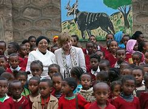

Abebech Gobena, humanitarian known as ‘the Mother Teresa of Africa’ – obituary Her foundation provided education and welfare for hundreds of thousands in trouble-torn Ethiopia
Abebech Gobena, who has died of Covid-19 aged 85, was an Ethiopian philanthropist of limited wealth but international renown who founded one of her country’s largest orphanages and became known as the “Mother Teresa of Africa”.
In a country racked by poverty, famine, war and HIV/Aids, she set up a humanitarian organisation, Agohelma, which catered initially for orphans, then expanded to meet the wider educational and welfare needs of the poor. About 6,000 children a year now receive help from Agohelma and it is estimated to have touched the lives of more than 300,000 people since it was founded in 1980.
Her commitment to the destitute began in 1973, when what were then the northern provinces of Wollo and Tigray were gripped by famine caused by drought and exacerbated by neglect on the part of Emperor Haile Selassie’s government.
Returning to Addis Ababa from a pilgrimage to Gishen Mariam in Wollo, where Ethiopian Orthodox Christians believe a piece of the True Cross is enshrined, Gobena came across a dead woman whose baby girl was still suckling at her breast. “There were so many of these hungry people sprawled all over, you could not even walk,” she told CNN in an interview in 2010.
Abebech Gobena distributed the loaf of bread and the five litres of Holy Water she had with her and brought the motherless child back with her to Addis. By the end of the year she had taken in 21 orphans.
At her orphanage with the German First Lady Daniela Schadt in 2013 At her orphanage with the German First Lady Daniela Schadt in 2013 CREDIT: Sean Gallup/Getty Images
Presented with an ultimatum by her husband that she must choose either their marriage or the orphans, she moved out of her home with the children to a chicken shed in the forest on land which she had bought with the intention of raising poultry. To support her new charges, she sold her jewellery, converted her dresses into children’s clothes and made honey wine and injera, the Ethiopian flatbread, for sale.
In 1980 she founded Agohelma, the Abebech Gobena Child Care and Development Association, and six years later succeeded in registering it as a non-profit organisation with the Marxist Derg regime. Registration enabled her to officially raise money and to accept grants. Prominent among Agohelma’s foreign supporters is the Swiss Menschen für Menschen Foundation.
Abebech Gobena Heye was born on October 20 1935 in Shebel Abo, a village north of Addis in what was then Shewa province. Her father, Gofe Heye, a farmer, was killed a month later in the Second Italo-Ethiopian War, an invasion launched by Mussolini from the Italian colony of Eritrea. The baby and her mother, Wosene Biru, went to live with the dead man’s parents.
Marriage to a much older man was arranged for her when she was 10. She soon ran home, but was returned to her husband. She escaped again and made her way to Addis, where she found a family to live with, went to school, remarried and became a quality control inspector with a company exporting grain and coffee. By the time she began her philanthropic work she had achieved a certain affluence, which she then sacrificed to her new vocation.
The scope of her philanthropy was enormous. It ranged from formal schooling to teaching cooking, metalworking, carpentry, plumbing, masonry, embroidery, silk-screen printing and photography, providing capital for the older children to start businesses, building schools, a hospital for women, houses, latrines and waterpoints, training health and family planning advisers, including HIV/Aids prevention, planting trees, carrying out immunisation and launching savings and credit schemes to help poor women.
s She said in an interview in 2004: “I have no children of my own, but I have a family of hundreds of thousands.”
Six years later she said of the children in her charge: “I suffered because of the traditions of the country I was born in. But things have improved. My goal is not to marry them off, but to raise them as adults who can take care of themselves.”
She added: “I have no regrets. God has helped me get to this point. I always had great faith in God.”
Abebech Gobena received an honorary doctorate from Jimma University, Ethiopia’s leading institute of tertiary education.
Her burial took place in the Holy Trinity Cathedral in the capital, the resting place of the imperial family. The patriarch of the Ethiopian Orthodox Church, Abune Mathias, presided.
Abebech was born on 20 October 1935[2] in a small rural village in Amhara Governorate called Shebel.[4] Her father was killed during the Second Italo-Ethiopian War, so she was raised by her grandparents until the age of nine. At the age of 10, she was married without her consent, but she ran away to the capital, Addis Ababa. There, she managed to get basic education and later worked as a quality controller at a coffee and grain company.[5]
She went to Gishen Mariam, Wollo Province, for pilgrimage in 1973. At the time, the area was severely stricken by famine. In a feeding center, Gobena saw a child next to her dead mother. She distributed the only thing she had to other victims, a loaf of bread and five liters of holy water, and brought the child along with another orphan to her home in Addis Ababa. In one year, she brought 21 children to her home.[5]
Abebech Gobena Yehetsanat Kebekebena limat Mahber (AGOHELMA) was founded by Abebech in 1980 and has become one of the earliest orphanages serving youth in the Ethiopia.[6] AGOHELMA provides various services in addition to the orphanage itself, including formal and non-formal education, HIV/AIDS prevention activities, habitat improvement and infrastructure development, empowerment of women, among others. Additionally, it provides institutional care for 150 orphans. Since its establishment, over 12,000 needy children have been supported by the association with over 1.5 million people having benefited either directly or indirectly from the association in different regions of the country.[7]
In June 2021, Abebech's health worsened from COVID-19 and she was hospitalized at St. Paul's Hospital in Addis Ababa. However, she died from the complications on 4 July 2021.[8][9] Her burial took place on 6 July at Holy Trinity Cathedral with government officials and mourners. Patriarch of the Ethiopian Orthodox Church Abune Matias, President of Oromia Region Shimelis Abdisa, Deputy Mayor of Addis Ababa Adanech Abebe and other public figures also attended the funeral.[10].
for more information